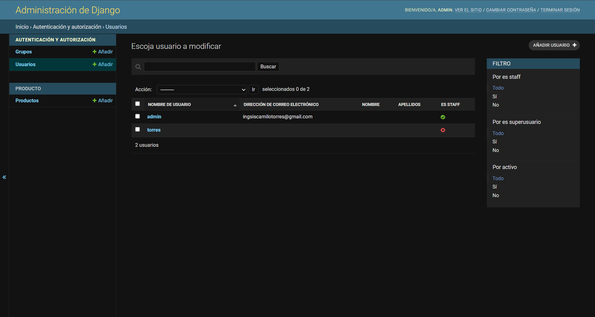

Hard Skills
C++
Java
Python
HTML
CSS
JavaScript
PHP
Soft Skills
- Colaboración Proactiva: Capacidad para integrarme eficazmente en equipos de trabajo, aportando ideas y soluciones para alcanzar objetivos comunes.
- Resolución Estratégica de Problemas: Habilidad para analizar desafíos complejos, identificar soluciones innovadoras y aplicarlas de manera eficiente.
- Comunicación Asertiva: Destreza para expresar ideas de forma clara y concisa, tanto a nivel técnico como no técnico, facilitando el entendimiento y la colaboración.
- Pensamiento Crítico y Analítico: Aptitud para evaluar información desde múltiples perspectivas, tomar decisiones informadas y prever posibles resultados.
- Adaptabilidad y Aprendizaje Continuo: Flexibilidad para ajustarme a nuevos entornos y tecnologías, con un fuerte compromiso por el aprendizaje y el desarrollo profesional constante.
My Projects
Adminventary
Aplicativo web de gestión de inventario con documentación tecnica, elaborado en ajax, css, js, php and mysql.
MaestroDetalle
Aplicación para administrar un registro completo de empleados, vinculando su información personal con sus detalles laborales y comisiones, incluyendo la capacidad de registrar fotos y videos.
CitasMedicas
Sistema CRUD que permite a una clínica o consultorio administrar su flujo de citas y pacientes, mientras que los pacientes tienen un portal para consultar su información.
TiendaMintic
Proyecto académico de tienda virtual con una base de datos funcional desarrollado con django para el curso del MinTic
PseintCol
Simulador de PSeInt como herramienta para aprender fundamentos básicos de la programación. Diseñado para interpretar pseudocódigo con un léxico español específico.

Dev-Portfolio
Presentación estatatica de mi Portafolio web con tecnologías como html, CSS y JavaScript.